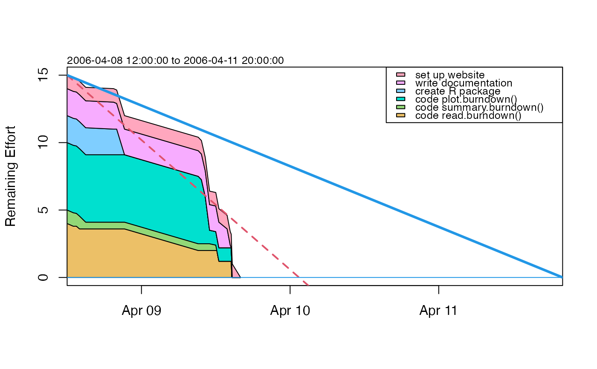

Read a data file containing burndown information.
Details
Reads a burndown dataset.
A strict format is required, in which the following items must be present, in the stated order, and with nothing else in the file. An example is given after the description.
Line 1: contains two comma-separated items: the string
Start, and a time expressed in ISO 8601 format (YYYY-MM-DDorYYY-MM-DD hh:mm:ss). This line indicates the start of the project.Line 2: as Line 1, but the string is to be
Start, and the line indicates the deadline for the project.Line 3: a header line for a "tasks" list, comprising the following three words separated by commas:
Key,Description, andEffort.Lines 4 to N: data lines, each containing three items: a numeric index "Key" for the task, a short "Description" of the task, and the estimated "Effort" for this task, expressed as a number. The keys must be distinct, and they must match the keys in the progress table (see below). The description should be short enough to give a reasonable-size legend as created by
plot,burndown-method(). The effort may be expressed in any convenient unit, e.g. the number of hours or days for the task, or as a percentage of the overall task.Line N+1: a header line for the "Progress" list, comprising the following four words separated by commas:
Key,Done, andTime.Line N+2 to end: data lines holding Progress items. Each "Key" must match a key in the task list. The "Done" column holds the percentage of the task that has been completed. The "Time" is in ISO 8601 format, as described above.
Sample data file
Start, 2006-04-08 12:00:00
Deadline, 2006-04-11 20:00:00
Key, Description, Effort
1, Code read.burndown(), 4
2, Code summary.burndown(), 1
3, Code plot.burndown(), 5
4, Create R package, 2
5, Write documentation, 2
6, Set up website, 1
Key, Done, Time
1, 5, 2006-04-08 13:00:00
2, 5, 2006-04-08 13:30:00
1, 10, 2006-04-08 14:00:00
2, 50, 2006-04-08 15:00:00
4, 5, 2006-04-08 19:30:00
5, 5, 2006-04-08 20:00:00
4, 100, 2006-04-08 21:16:00
1, 50, 2006-04-09 09:10:00
3, 5, 2006-04-09 09:41:00
3, 30, 2006-04-09 10:18:00
3, 80, 2006-04-09 11:00:00
2, 60, 2006-04-09 12:00:00
2, 100, 2006-04-09 12:10:00
1, 70, 2006-04-09 12:30:00
5, 30, 2006-04-09 13:50:00
5, 90, 2006-04-09 14:20:00
5, 100, 2006-04-09 14:30:00
1, 100, 2006-04-09 14:35:00
3, 100, 2006-04-09 14:40:00
6, 100, 2006-04-09 16:00:00
See also
Other things related to burndown data:
as.burndown(),
burndown,
burndown-class,
plot,burndown-method,
summary,burndown-method
Examples
library(plan)
filename <- system.file("extdata", "burndown.dat", package = "plan")
b <- read.burndown(filename)
summary(b)
#> Start, 2006-04-08 12:00:00
#> Deadline, 2006-04-11 20:00:00
#> Key, Description, Effort
#> 1, code read.burndown(), 4
#> 2, code summary.burndown(), 1
#> 3, code plot.burndown(), 5
#> 4, create R package, 2
#> 5, write documentation, 2
#> 6, set up website, 1
#> Key, Done, Time
#> 1, 5, 2006-04-08 13:00:00
#> 2, 5, 2006-04-08 13:30:00
#> 1, 10, 2006-04-08 14:00:00
#> 2, 50, 2006-04-08 15:00:00
#> 4, 5, 2006-04-08 19:30:00
#> 5, 5, 2006-04-08 20:00:00
#> 4, 100, 2006-04-08 21:16:00
#> 1, 50, 2006-04-09 09:10:00
#> 3, 5, 2006-04-09 09:41:00
#> 3, 30, 2006-04-09 10:18:00
#> 3, 80, 2006-04-09 11:00:00
#> 2, 60, 2006-04-09 12:00:00
#> 2, 100, 2006-04-09 12:10:00
#> 1, 70, 2006-04-09 12:30:00
#> 5, 30, 2006-04-09 13:50:00
#> 5, 90, 2006-04-09 14:20:00
#> 5, 100, 2006-04-09 14:30:00
#> 1, 100, 2006-04-09 14:35:00
#> 3, 100, 2006-04-09 14:40:00
#> 6, 100, 2006-04-09 16:00:00
plot(b)
